Chapter 2 Basketball: how likely is it to score?
begin
using Random
Random.seed!(1234)
end;begin
using CSV
using DataFrames
using StatsPlots
using Plots
season_2007 = CSV.read("./chapter-2/data/seasons/shots_season_2006_2007.csv", DataFrame)
#shots = vcat(season_2007, season_2008, season_2009);
shots = season_2007
shots[!, :distance] = sqrt.( shots.x .^ 2 + shots.y .^ 2)
shots[!, :angle] = atan.( shots.y ./ shots.x )
filter!(x-> x.distance>1, shots)
end;begin
using Images
img = load("./chapter-2/images/basket_court.png")
plot(img)
end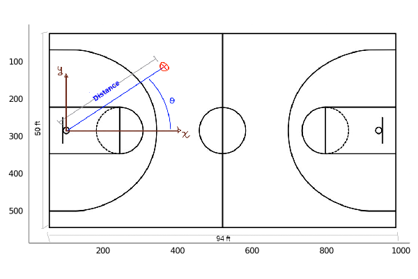
begin
using Turing
using StatsFuns
endWhen playing basketball we can ask ourself: how likely is it to score given a position in the court? To answer this question we are going to use data from NBA games from the season 2006 - 2007. We will consider all types of shots.
first(shots)## DataFrameRow
## Row │ result x y period time distance angle
## │ Int64 Int64 Float64 Int64 Time… Float64 Float64
## ─────┼───────────────────────────────────────────────────────────────
## 1 │ 0 -14 16.75 1 11:42:00 21.8303 -0.874592But how do we interpret the data?
Below we show a sketch of a basketball court, its dimensions and how to interpret the data in the table.
So, the x and y axis have their origin at the hoop, and we compute the distance from this point to where the shot was made. Also, we compute the angle with respect to the x axis, showed as θ in the sketch. In the data we have the period, which can take values from 1 to 4, meaning the period in which the shot was made.
We now plot where the shots where made:
begin
histogram2d(shots.y[1:10000], shots.x[1:10000], bins=(50,30))
ylabel!("y axis")
xlabel!("x axis")
end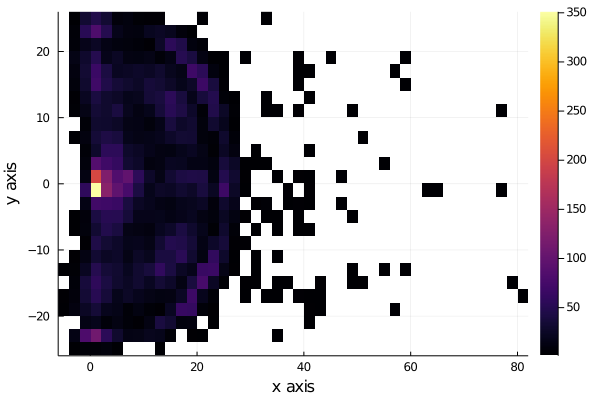
We see that the shots are very uniformly distributed near the hoop, except for distances very near to the hoop, to see this better, we plot the histograms for each axis, x and y.
But we are interested in the shots that were scored, so we filter now the shots made and plot the histogram of each axis.
shots_made = filter(x->x.result==1, shots);begin
using StatsBase
h = fit(Histogram, (shots_made.y, shots_made.x), nbins=40)
#plot(h) # same as histogram2d
wireframe(midpoints(h.edges[2]), midpoints(h.edges[1]), h.weights, zlabel="counts", xlabel="y", ylabel="x", camera=(40,40))
title!("Histogram of shots scored")
end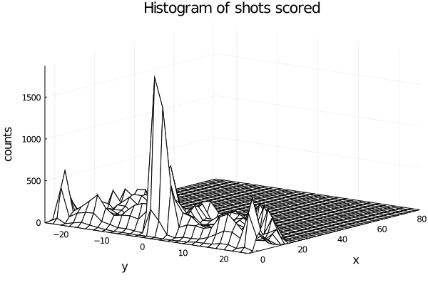
begin
histogram(shots_made.y[1:10000], legend=false, nbins=40)
xlabel!("x axis")
ylabel!("Counts")
end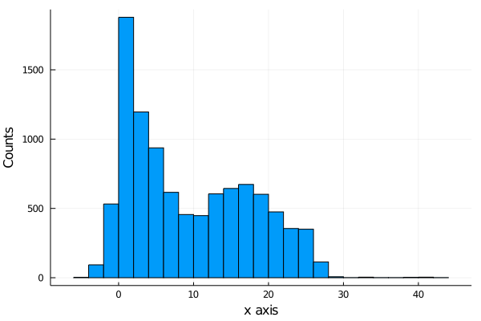
begin
histogram(shots_made.x[1:10000], legend=false, nbins=45)
xlabel!("y axis")
ylabel!("Counts")
end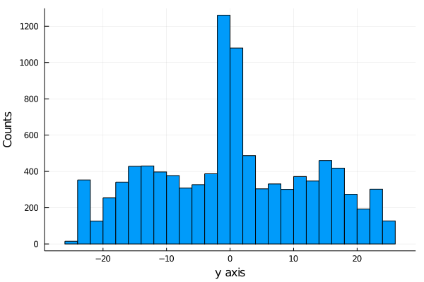
If we plot a 3d plot of the count we obtain the plot wireplot shown below.
We see that more shot are made as we get near the hoop, as expected.
It is important to notice that we are not showing the probability of scoring, we are just showing the distribution of shot scored, not how likely is it to score.
2.0.1 Modeling the probability of scoring
The first model we are going to propose is a Bernoulli model.
Why a Bernoulli Distribution?
A Bernoulli Distribution results from an experiment in which we have 2 possible outcomes, one that we usually called a success and another called a fail. In our case our success is scoring the shot and the other possible event is failing it.
The only parameter needed in a bernoulli distribution is the probability p of having a success. We are going to model this parameter as a logistic function:
begin
plot(logistic, legend=false)
ylabel!("Probability")
xlabel!("x")
title!("Logistic function (x)")
end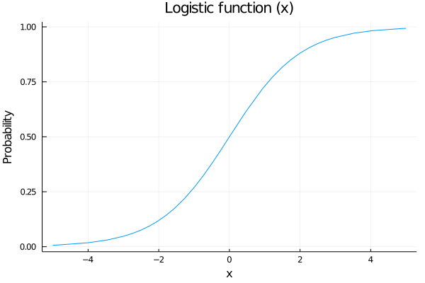 Why a logistic function?
We are going to model the probability of shoot as a function of some variables, for example the distance to the hoop, and we want that our probability of scoring increases as we are getting closer to it. Also out probability needs to be between 0 an 1, so a nice function to map our values is the logistic function.
So, the model we are going to propose is:
\(p\sim logistic(a+ b*distance[i] + c*angle[i])\) \(outcome[i]\sim Bernoulli(p)\)
But what values and prior distributions are we going to propose to the parameters a, b and c?
Let’s see:
2.1 Prior Predictive Checks: Part I
Suppose we say that our prior distributions for a, b and c are going to be 3 gaussian distributions with mean 0 and variance 1. Lets sample and see what are the possible posterior distributions for our probability of scoring p:
\(a\sim N(0,1)\) \(b\sim N(0,1)\) \(c\sim N(0,1)\)
begin
possible_distances = 0:0.01:1
possible_angles = 0:0.01:π/2
angle = π/2
n_samples = 100
a_prior_sampling = rand(Normal(0,1), n_samples)
b_prior_sampling = rand(Normal(0,1), n_samples)
predicted_p = []
for i in 1:n_samples
push!(predicted_p, logistic.(a_prior_sampling[i] .+ b_prior_sampling[i].*possible_distances))
end
endbegin
plot(possible_distances, predicted_p[1], legend = false, color="blue")
for i in 2:n_samples
plot!(possible_distances, predicted_p[i], color=:blue)
end
xlabel!("Normalized distance")
ylabel!("Predicted probability")
title!("Prior predictive values for p")
current()
end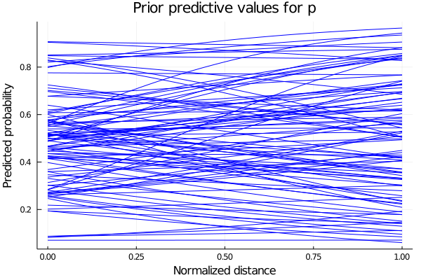
We see that some of the predicted behaviours for p don’t make sense. For example, if b takes positive values, we are saying that as we increase our distance from the hoop, the probability of scoring also increase. So we propose instead the parameter b to be the negative values of a LogNormal distribution. The predicted values for p are shown below.
So our model now have as priors distributions:
\(a\sim Normal(0,1)\) \(b\sim LogNormal(1,0.25)\) \(c\sim Normal(0,1)\)
and sampling values from those prior distributions, we obtain the plot shown below for the predicted values of p.
begin
b_prior_sampling_negative = rand(LogNormal(1,0.25), n_samples)
predicted_p_inproved = []
for i in 1:n_samples
push!(predicted_p_inproved, logistic.(a_prior_sampling[i] .- b_prior_sampling_negative[i].*possible_distances))
end
end
begin
plot(possible_distances, predicted_p_inproved[1], legend = false, color=:blue)
for i in 2:n_samples
plot!(possible_distances, predicted_p_inproved[i], color=:blue)
end
xlabel!("Normalized distance")
ylabel!("Predicted probability")
title!("Prior predictive values for p with negative LogNormal prior")
current()
end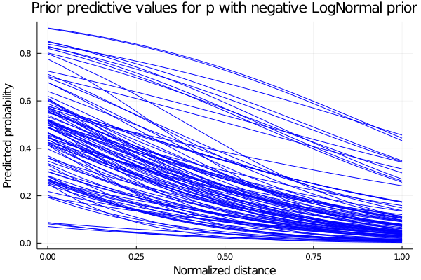 Now that we have the expected behaviour for p, we define our model and calculate the posterior distributions with our data points.
2.1.1 Defining our model and computing posteriors
Now we define our model to sample from it:
@model logistic_regression(distances, angles, result,n) = begin
N = length(distances)
# Set priors.
a ~ Normal(0,1)
b ~ LogNormal(1,0.25)
c ~ Normal(0,1)
for i in 1:n
p = logistic( a - b*distances[i] + c*angles[i])
result[i] ~ Bernoulli(p)
end
end## logistic_regression (generic function with 1 method)n=1000;The output of the sampling tell us also some information about sampled values for our parameters, like the mean, the standard deviation and some other computations.
# Sample using HMC.
chain = mapreduce(c -> sample(logistic_regression(shots.distance[1:n] ./ maximum(shots.distance[1:n] ), shots.angle[1:n], shots.result[1:n], n), NUTS(), 1500),
chainscat,
1:3
);2.1.1.1 Traceplot
In the plot below we show a traceplot of the sampling.
What is a traceplot?
When we run a model and calculate the posterior, we obtain sampled values from the posterior distributions. We can tell our sampler how many sampled values we want. A traceplot is just showing them in sequential order. We also can plot the distribution of those values, and this is what is showed next to each traceplot.
plot(chain, dpi=60)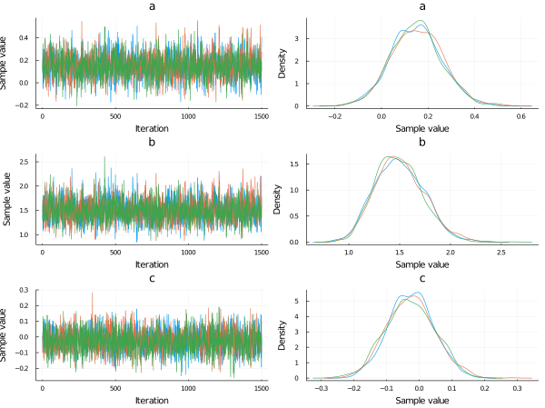
begin
a_mean = mean(chain[:a])
b_mean = mean(chain[:b])
c_mean = mean(chain[:c])
end;Now plotting the probability of scoring using the posterior distributions of a, b and c for an angle of 45°, we obtain:
begin
p_constant_angle = []
for i in 1:length(chain[:a])
push!(p_constant_angle, logistic.(chain[:a][i] .- chain[:b][i].*possible_distances .+ chain[:c][i].*π/4));
end
endbegin
plot(possible_distances,p_constant_angle[1], legend=false, alpha=0.1, color=:blue)
for i in 2:1000
plot!(possible_distances,p_constant_angle[i], alpha=0.1, color=:blue)
end
xlabel!("Normalized distance")
ylabel!("Probability")
title!("Scoring probability vs Normalized distance (angle=45°)")
current()
end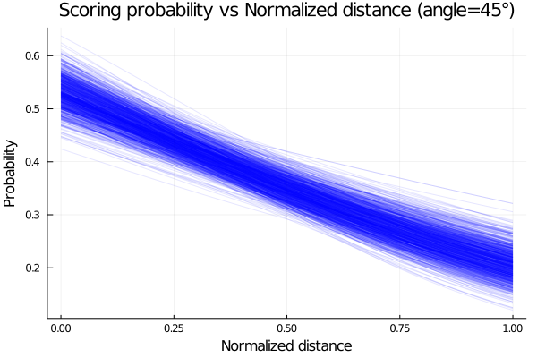
The plot shows that the probability of scoring is higher as our distance to the hoop decrease, which makes sense, since the difficulty of scoring increase.
We plot now how the probability varies with the angle for a given distance. Here we plot for a mid distance, corresponding to 0.5 in a normalized distance.
begin
p_constant_distance = []
for i in 1:length(chain[:a])
push!(p_constant_distance, logistic.(chain[:a][i] .- chain[:b][i].*0.5 .+ chain[:c][i].*possible_angles));
end
endbegin
plot(rad2deg.(possible_angles),p_constant_distance[1], legend=false, alpha=0.1, color=:blue)
for i in 2:1000
plot!(rad2deg.(possible_angles),p_constant_distance[i], alpha=0.1, color=:blue)
end
xlabel!("Angle [deg]")
ylabel!("Probability")
title!("Scoring probability vs Angle (mid distance)")
current()
end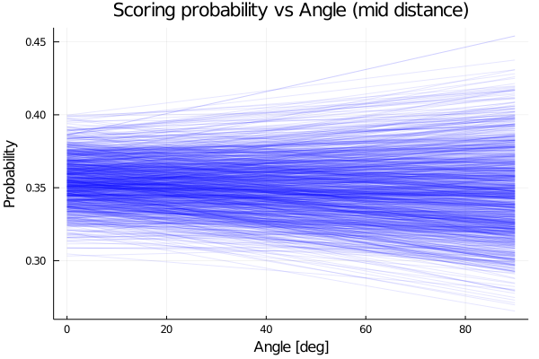
We see that the model predict an almost constant probability for the angle.
2.2 New model and prior predictive checks: Part II
Now we propose another model with the form:
\(p\sim logistic(a+ b^{distance[i]} + c*angle[i])\)
*But for what values of b the model makes sense?
We show below the plot for 4 function with 4 possible values of b, having in mind that the values of x, the normalized distance, goes from 0 to 1.
begin
f1(x) = 0.3^x
f2(x) = 1.5^x
f3(x) = -0.3^x
f4(x) = -1.5^x
end;
begin
plot(0:0.01:1, f1, label="f1: b<1 & b>0", xlim=(0,1), ylim=(-2,2), lw=3)
plot!(0:0.01:1, f2, label="f2: b>1", lw=3)
plot!(0:0.01:1, f3, label="f3: b<0 & b>-1", lw=3)
plot!(0:0.01:1, f4, label="f3: b<-1", lw=3)
xlabel!("Normalized distance")
title!("Prior Predictive influence of distance")
end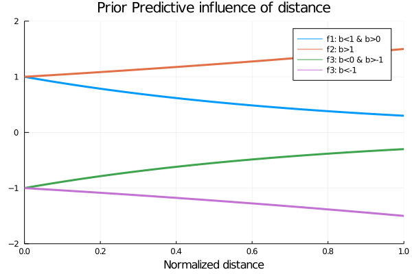
Analysing the possible values for b, the one that makes sense is the value proposed in f1, since we want an increasing influence of the distance in the values of p as the distance decreases, since the logistic function has higher values for higher values of x.
So now that we know the values the our parameter b can take, we propose for it a beta distribution with parameters α=2 and β=5, showed in the plot below.
begin
plot(Beta(2,5), xlim=(-0.1,1), legend=false)
title!("Prior distribution for b")
end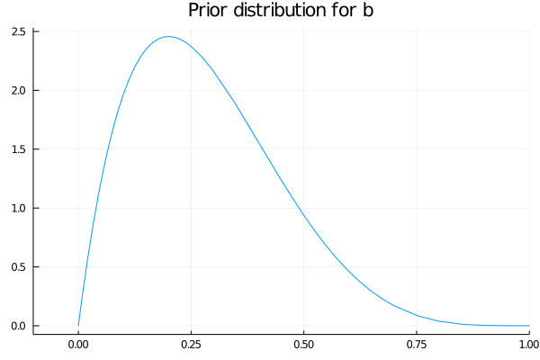
2.2.1 Defining the new model and computing posteriors
We define then our model and calculate the posterior as before.
@model logistic_regression_exp(distances, angles, result, n) = begin
N = length(distances)
# Set priors.
a ~ Normal(0,1)
b ~ Beta(2,5)
c ~ Normal(0,1)
for i in 1:n
p = logistic( a + b .^ distances[i] + c*angles[i])
result[i] ~ Bernoulli(p)
end
end## logistic_regression_exp (generic function with 1 method)# Sample using HMC.
chain_exp = mapreduce(c -> sample(logistic_regression_exp(shots.distance[1:n] ./ maximum(shots.distance[1:n] ), shots.angle[1:n], shots.result[1:n], n), HMC(0.05, 10), 1500),
chainscat,
1:3
);Plotting the traceplot we see again that the variable angle has little importance since the parameter c, that can be related to the importance of the angle variable for the probability of scoring, is centered at 0.
plot(chain_exp, dpi=55)
begin
p_exp_constant_angle = []
for i in 1:length(chain_exp[:a])
push!(p_exp_constant_angle, logistic.(chain_exp[:a][i] .+ chain_exp[:b][i].^possible_distances .+ chain_exp[:c][i].*π/4));
end
endEmploying the posteriors distributions computed, we plot the probability of scoring as function of the normalized distance and obtain the plot shown below.
begin
plot(possible_distances,p_exp_constant_angle[1], legend=false, alpha=0.1, color=:blue)
for i in 2:1000
plot!(possible_distances,p_exp_constant_angle[i], alpha=0.1, color=:blue)
end
xlabel!("Normalized distance")
ylabel!("Probability")
title!("Scoring probability vs Normalized distance (angle=45°)")
current()
end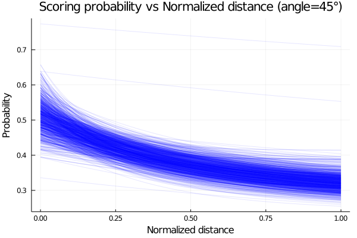
Given that we have 2 variables, we can plot the mean probability of scoring as function of the two and obtain a surface plot. We show this below.
begin
angle_ = collect(range(0, stop=π/2, length=100))
dist_ = collect(range(0, stop=1, length=100))
it = Iterators.product(angle_, dist_)
matrix = collect.(it)
values = reshape(matrix, (10000, 1))
angle_grid = getindex.(values,[1]);
dist_grid = getindex.(values,[2]);
z = logistic.(mean(chain_exp[:a]) .+ mean(chain_exp[:b]).^dist_grid .+ mean(chain_exp[:c]).*angle_grid);
end;im3 = load("./chapter-2/images/img1.png")## 771×1175 Array{RGBA{N0f8},2} with eltype RGBA{Normed{UInt8,8}}:
## RGBA{N0f8}(1.0,1.0,1.0,1.0) … RGBA{N0f8}(1.0,1.0,1.0,1.0)
## RGBA{N0f8}(1.0,1.0,1.0,1.0) RGBA{N0f8}(1.0,1.0,1.0,1.0)
## RGBA{N0f8}(1.0,1.0,1.0,1.0) RGBA{N0f8}(1.0,1.0,1.0,1.0)
## RGBA{N0f8}(1.0,1.0,1.0,1.0) RGBA{N0f8}(1.0,1.0,1.0,1.0)
## RGBA{N0f8}(1.0,1.0,1.0,1.0) RGBA{N0f8}(1.0,1.0,1.0,1.0)
## RGBA{N0f8}(1.0,1.0,1.0,1.0) … RGBA{N0f8}(1.0,1.0,1.0,1.0)
## RGBA{N0f8}(1.0,1.0,1.0,1.0) RGBA{N0f8}(1.0,1.0,1.0,1.0)
## RGBA{N0f8}(1.0,1.0,1.0,1.0) RGBA{N0f8}(1.0,1.0,1.0,1.0)
## RGBA{N0f8}(1.0,1.0,1.0,1.0) RGBA{N0f8}(1.0,1.0,1.0,1.0)
## RGBA{N0f8}(1.0,1.0,1.0,1.0) RGBA{N0f8}(1.0,1.0,1.0,1.0)
## ⋮ ⋱
## RGBA{N0f8}(1.0,1.0,1.0,1.0) RGBA{N0f8}(1.0,1.0,1.0,1.0)
## RGBA{N0f8}(1.0,1.0,1.0,1.0) RGBA{N0f8}(1.0,1.0,1.0,1.0)
## RGBA{N0f8}(1.0,1.0,1.0,1.0) RGBA{N0f8}(1.0,1.0,1.0,1.0)
## RGBA{N0f8}(1.0,1.0,1.0,1.0) … RGBA{N0f8}(1.0,1.0,1.0,1.0)
## RGBA{N0f8}(1.0,1.0,1.0,1.0) RGBA{N0f8}(1.0,1.0,1.0,1.0)
## RGBA{N0f8}(1.0,1.0,1.0,1.0) RGBA{N0f8}(1.0,1.0,1.0,1.0)
## RGBA{N0f8}(1.0,1.0,1.0,1.0) RGBA{N0f8}(1.0,1.0,1.0,1.0)
## RGBA{N0f8}(1.0,1.0,1.0,1.0) RGBA{N0f8}(1.0,1.0,1.0,1.0)
## RGBA{N0f8}(1.0,1.0,1.0,1.0) … RGBA{N0f8}(1.0,1.0,1.0,1.0)plot(im3)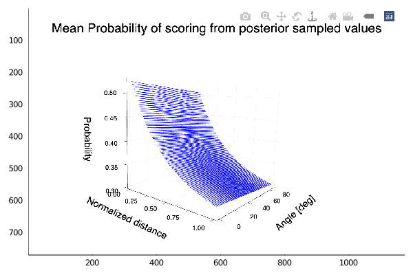
The plot show the behaviour expected, an increasing probability of scoring as we get near the hoop. We also see that there is almost no variation of the probability with the angle.
2.3 Does the Period affect the probability of scoring?
Now we will try to answer this question. We propose then a model, and calculate the posterior for its parameters with data of one of each of the four possible periods. We define the same model for all four periods. Also, we don’t take into account now the angle variable, since we have seen before that this variable is of little importance.
We filter then our data by its period and proceed to estimate our posterior distributions.
shots_period1= filter(x->x.period==1, shots);@model logistic_regression_period(distances, result,n) = begin
N = length(distances)
# Set priors.
a ~ Normal(0,1)
b ~ Beta(2,5)
for i in 1:n
p = logistic( a + b .^ distances[i])
result[i] ~ Bernoulli(p)
end
end## logistic_regression_period (generic function with 1 method)n_ = 500## 500# Sample using HMC.
chain_period1 = mapreduce(c -> sample(logistic_regression_period(shots_period1.distance[1:n_] ./ maximum(shots_period1.distance[1:n_] ),shots_period1.result[1:n_], n_), HMC(0.05, 10), 1500),
chainscat,
1:3
);shots_period2= filter(x->x.period==2, shots);# Sample using HMC.
chain_period2 = mapreduce(c -> sample(logistic_regression_period(shots_period2.distance[1:n_] ./ maximum(shots_period2.distance[1:n_] ), shots_period2.result[1:n_], n_), HMC(0.05, 10), 1500),
chainscat,
1:3
);shots_period3= filter(x->x.period==3, shots);# Sample using HMC.
chain_period3 = mapreduce(c -> sample(logistic_regression_period(shots_period3.distance[1:n_] ./ maximum(shots_period3.distance[1:n_] ), shots_period3.result[1:n_], n_), HMC(0.05, 10), 1500),
chainscat,
1:3
);shots_period4 = filter(x->x.period==4, shots);# Sample using HMC.
chain_period4 = mapreduce(c -> sample(logistic_regression_period(shots_period4.distance[1:n_] ./ maximum(shots_period4.distance[1:n_]), shots_period4.result[1:n_], n_), HMC(0.05, 10), 1500),
chainscat,
1:3
);begin
p_period1 = logistic.(mean(chain_period1[:a]) .+ mean(chain_period1[:b]).^possible_distances )
p_period1_std = logistic.((mean(chain_period1[:a]).+std(chain_period1[:a])) .+ (mean(chain_period1[:b]).+std(chain_period1[:a])).^possible_distances)
p_period2 = logistic.(mean(chain_period2[:a]) .+ mean(chain_period2[:b]).^possible_distances )
p_period2_std = logistic.((mean(chain_period2[:a]).+std(chain_period2[:a])) .+ (mean(chain_period2[:b]).+std(chain_period2[:a])).^possible_distances)
p_period3 = logistic.(mean(chain_period3[:a]) .+ mean(chain_period3[:b]).^possible_distances)
p_period3_std = logistic.((mean(chain_period3[:a]).+std(chain_period3[:a])) .+ (mean(chain_period3[:b]).+std(chain_period3[:a])).^possible_distances)
p_period4 = logistic.(mean(chain_period4[:a]) .+ mean(chain_period4[:b]).^possible_distances )
p_period4_std = logistic.((mean(chain_period4[:a]).+std(chain_period4[:a])) .+ (mean(chain_period4[:b]).+std(chain_period4[:a])).^possible_distances )
end;We plot now for each period the probability of scoring for each period, each mean and one standard deviation from it.
begin
plot(possible_distances, p_period4,ribbon=p_period4_std.-p_period4, color=:magenta, label="period4", fillalpha=.3, ylim=(0,0.6))
plot!(possible_distances, p_period2, color=:green, ribbon=p_period2_std.-p_period2, label="period2", fillalpha=.3)
plot!(possible_distances, p_period3, color=:orange, ribbon=p_period3_std.-p_period3, label="period3",fillalpha=.3)
plot!(possible_distances, p_period1,ribbon=p_period1_std.-p_period1, color=:blue, label="period1", fillalpha=.3)
xlabel!("Normalized distance")
ylabel!("Scoring probability")
end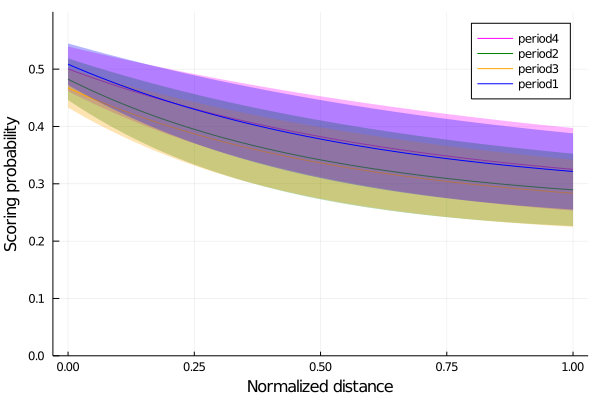
Finally, we see that for the periods 1 and 4, the first and the last periods, the probabity of scoring is slightly higher than the other two periods, meaning that players are somewhat better scoring in those periods.
2.3.1 Summary
In this chapter, we used the NBA shooting data of the season 2006-2007 to analyze how the scoring probability is affected by some variables, such as the distance from the hoop and the angle of shooting.
First, we inspected the data by plotting a heatplot of all the shots made and making histograms of the ones that scored. As our goal was to study the probability of scoring, which is a Bernoulli trial situation, we decided to use a Bernoulli model. Since the only parameter needed in a Bernoulli distribution is the probability p of having a success, we modeled p as a logistic function: \(p\sim logistic(a+ b*distance[i] + c*angle[i])\)
We set the prior probability of the parameters a and c to a normal distribution and b to a log-normal one. Thus, we constructed our logistic regression model and sampled it using the Markov Monte Carlo algorithm. To gain a better understanding of the sampling process, we made a traceplot that shows the sampled values in a sequential order.
Later, we decided to try with a more complex logistic regression model, similar to the first one but this time modifying the distance parameter: \(p\sim logistic(a+ b^{distance[i]} + c*angle[i])\)
We set the prior distribution of b to a beta distribution and constructed the second logistic regression model, sampled it and plotted the results.
Finally, we analyzed the results to see if the period of the game affects the probability of scoring.
2.3.2 Give us feedback
This book is currently in a beta version. We are looking forward to getting feedback and criticism: * Submit a GitHub issue here. * Mail us to martina.cantaro@lambdaclass.com
Thank you!
date: “4/14/2021” output: html_document —